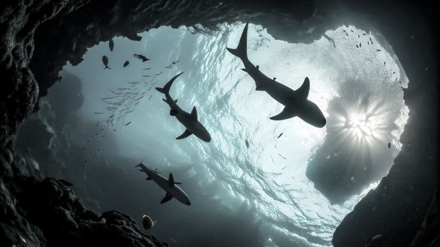
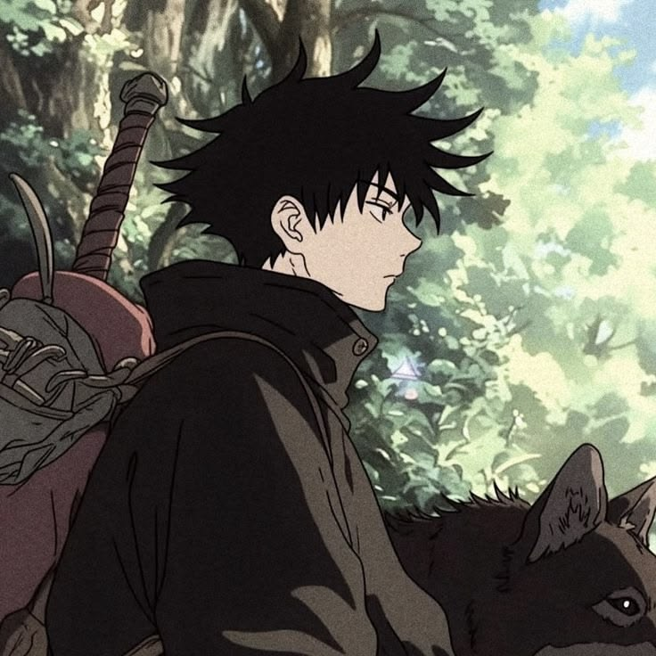
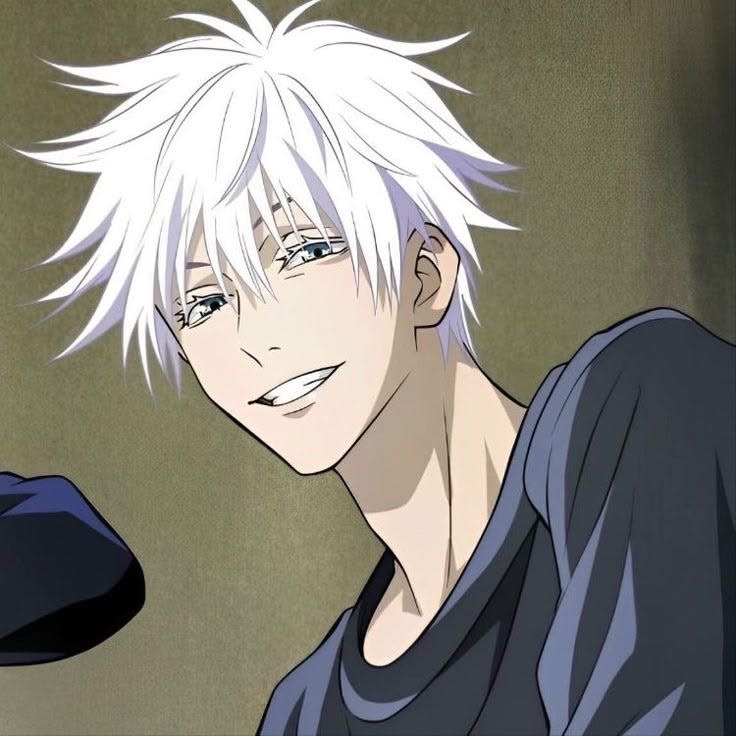
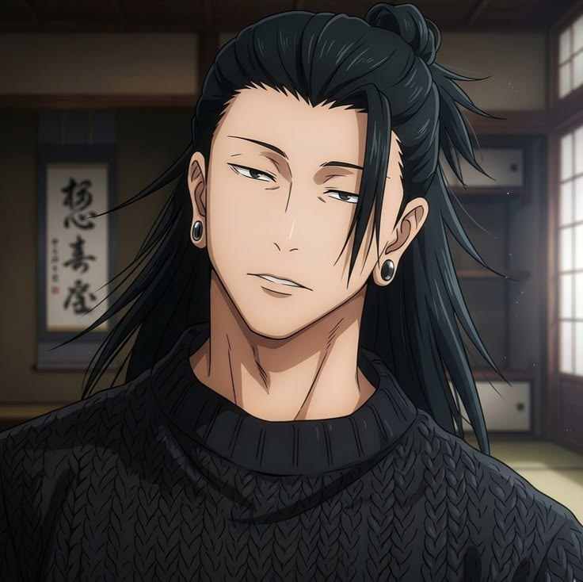

Cualquier arte y cualquier doctrina, y asimismo toda acción y elección, parece que a algún bien es enderezada.

"Odio a la gente mala, se creen tan superiores cuando su empatía e imaginación están tan vacías como un lote baldío. Tampoco soporto a la gente buena porque perdonan a esos malos".

La información que han recogido mis seis ojos dice que eres Suguru Geto, pero mi alma se niega a creerlo.

¿Eres el más fuerte porque eres Satoru Gojo, o eres Satoru Gojo porque eres el más fuerte?
Contenido sobre música, idols y cultura coreana
El K-pop combina música, baile y creatividad, creando una experiencia única que conecta con muchas personas y destaca por su estilo y energía.
En el K-pop hay grupos que destacan por su estilo, talento y presencia en el escenario. Cada uno desarrolla una identidad propia que evoluciona con cada comeback, mostrando nuevas facetas.
El K-pop ofrece canciones con ritmos variados y gran producción. Algunas transmiten emociones, mientras que otras destacan por su energía y coreografías.
Cada comeback presenta un concepto visual diferente con vestuario y estética únicos. Esta creatividad hace que el K-pop destaque y marque tendencias.